基于事件感知情绪因子的公司级隔夜异常收益识别研究
中心论点：金融新闻情绪不是直接拿来预测涨跌，而应先被事件化、公司化、短窗口化，才能更接近可交易 alpha。
深圳大学金融科技专业
课程大作业展示稿
最终结论不是“情绪万能”，而是“事件感知情绪才有机会成为 alpha”
旧问题失真
日级平均情绪容易混入时间戳错位、市场状态漂移和指数 beta。
新任务更合理
只看公司级事件新闻，并预测市场调整后的隔夜异常收益。
增量来自交互
事件情绪在 XGBoost 中改善 rank IC 和 spread Sharpe，说明它更像非线性条件因子。
研究问题必须从二分类准确率转向横截面排序能力
不能只问
必须追问
旧基线的问题在于“看起来能分类”，但不能说明情绪是 alpha
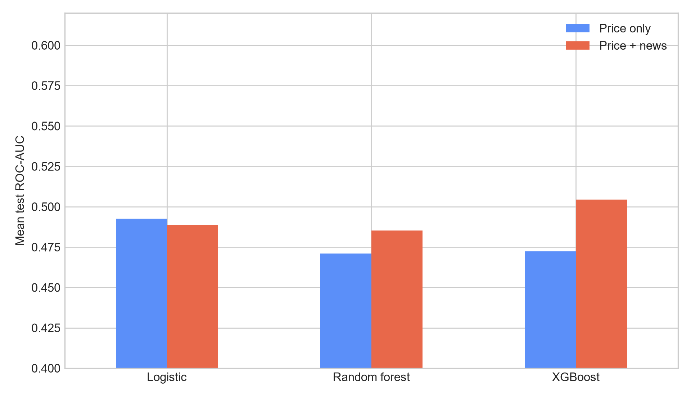
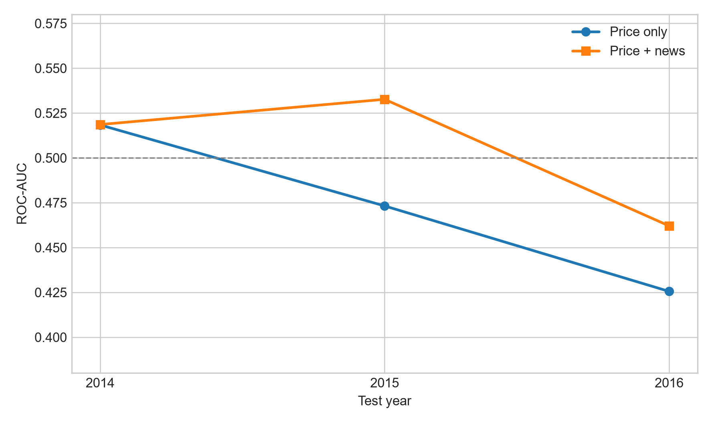
旧实验图：加入新闻后模型指标不稳定，且跨年度表现漂移明显。
日级新闻聚合会把真实交易时间结构压扁
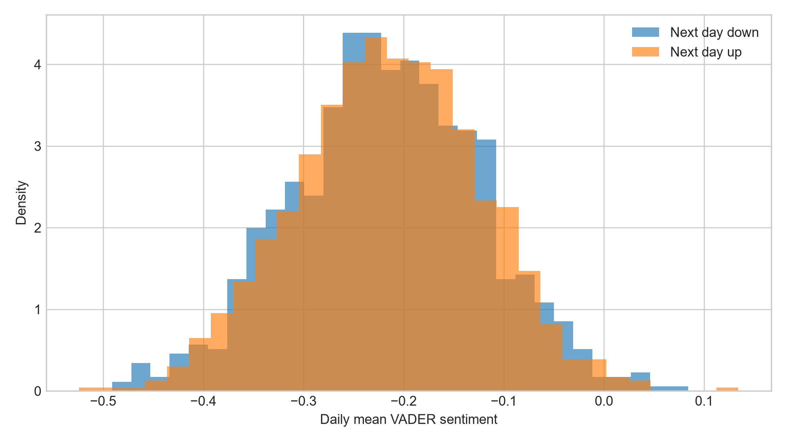
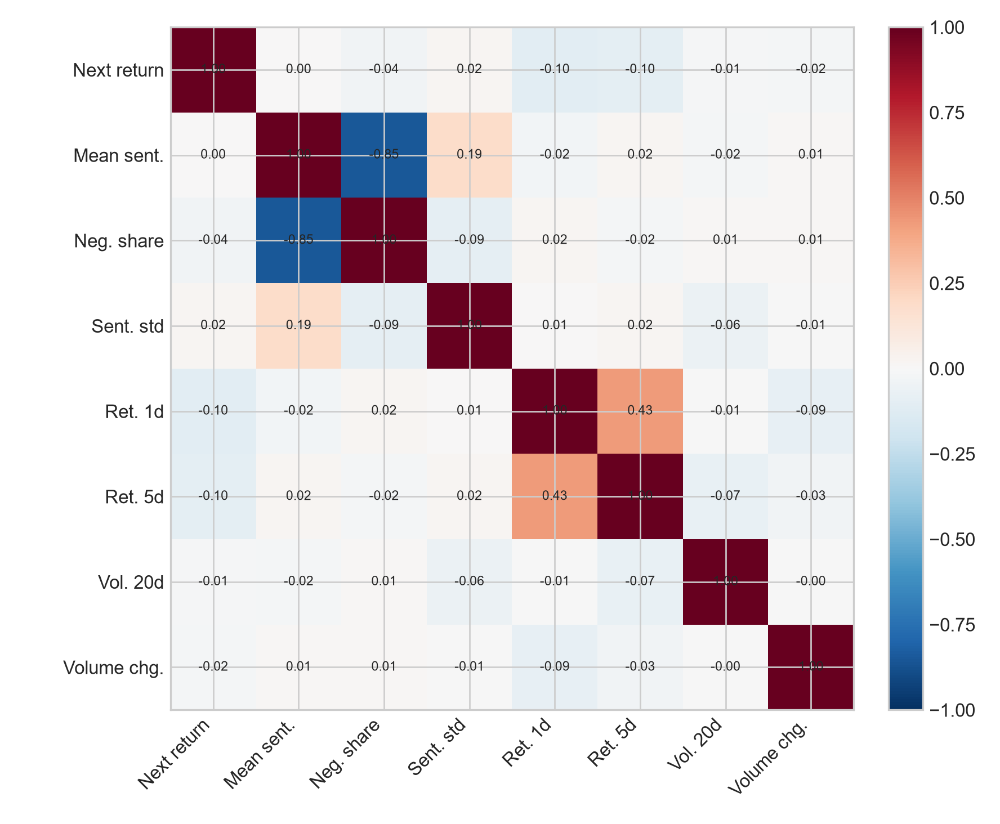
旧实验图：情绪分布和特征相关性只能说明样本结构，不能证明情绪本身可交易。
时间维度的核心风险是训练窗口与测试窗口的市场机制不一致
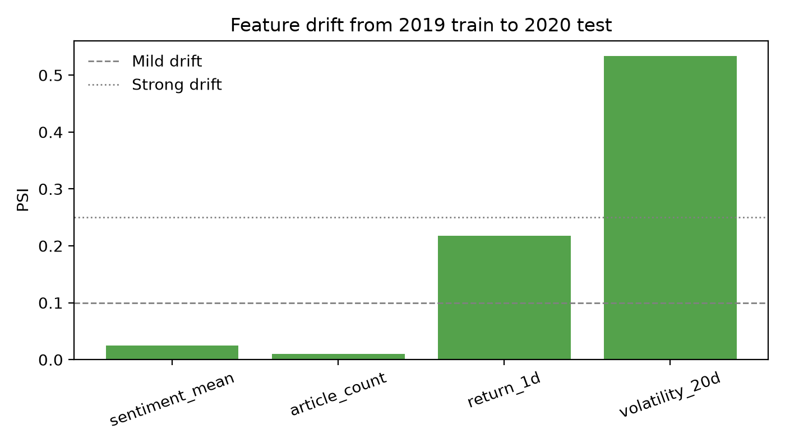
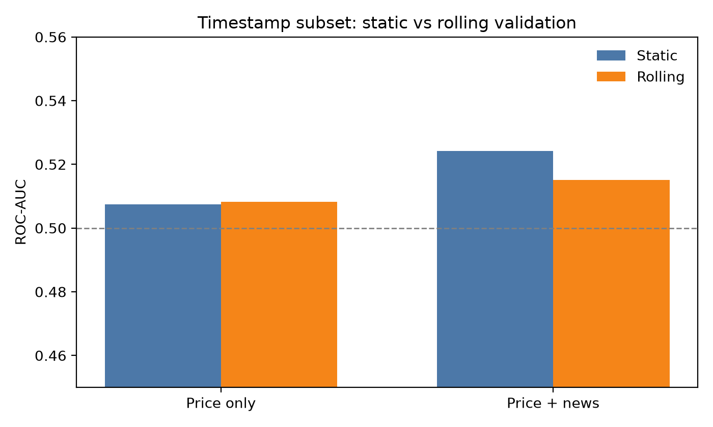
漂移诊断图：静态跨年训练容易把阶段性结构误当成规律，滚动重训更接近实际部署。
本文拍板采用“事件感知情绪因子 + 隔夜异常收益”作为主线
样本收窄不是缺陷，而是为了提高事件与价格反应的一致性
股票
AAPL、GOOGL、MSFT、TSLA。
事件新闻
命中事件 taxonomy 的盘前/盘后新闻。
信号日
公司、日期、事件新闻聚合后的样本。
面板
公司交易日级价格与新闻特征。
事件 taxonomy 决定情绪是否有金融含义
同样的负面情绪，发生在财报指引、监管调查、产品召回中，价格含义不同。
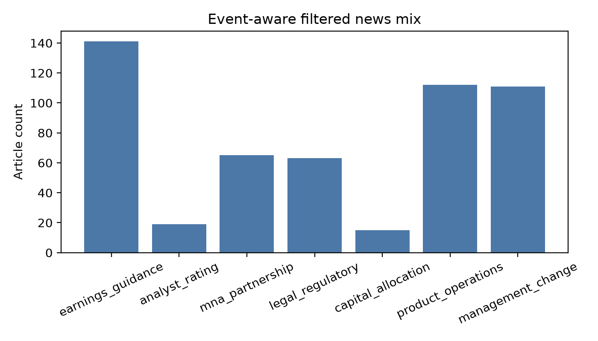
事件过滤后，财报指引、产品运营、管理层变动是主要事件来源。
标签必须贴近新闻被吸收的交易窗口
隔夜异常收益
为什么不是下一日收盘
验证策略同时检查跨年迁移和滚动部署
Static
2019 年训练，2020 年测试。
检验跨年度迁移能力。
Rolling
过去 6 个月训练，下一个自然月测试。
更接近真实模型更新。
Factor Metrics
Pearson IC、rank IC、spread、Sharpe。
直接评价排序与组合价值。
事件感知情绪对 XGBoost 有正增量，但不是线性万能变量
| 模型 | 特征 | rank IC | Pearson IC | Spread | Sharpe |
|---|---|---|---|---|---|
| Ridge | Price-static | .388 | .457 | .0164 | 9.29 |
| Ridge | Event-static | .369 | .446 | .0160 | 9.03 |
| XGB | Price-static | .309 | .392 | .0153 | 8.64 |
| XGB | Event-static | .336 | .403 | .0161 | 9.11 |
| XGB | Price-rolling | .311 | .344 | .0138 | 7.18 |
| XGB | Event-rolling | .322 | .347 | .0144 | 7.59 |
新因子的核心证据是横截面排序能力改善
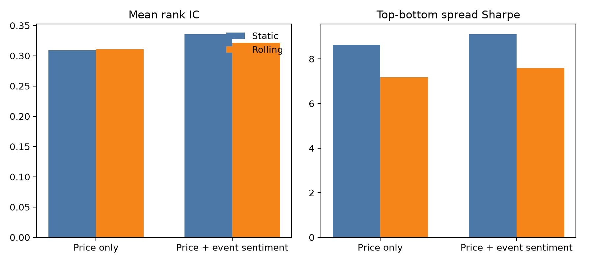
XGBoost 下，加入事件感知情绪后 static 与 rolling 两类检验均有正增量。
Top-Bottom 组合显示排序信号具有持续方向
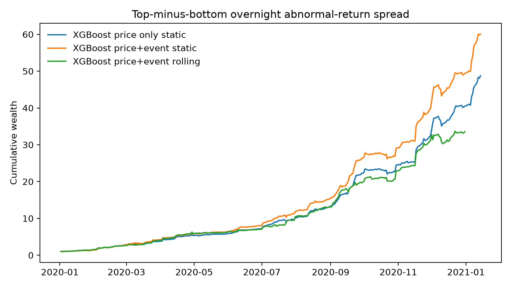
该图不是生产级策略回测，而是用于检验排序信号是否在样本期持续累积。
旧策略回测图说明“直接交易平均情绪”并不稳健
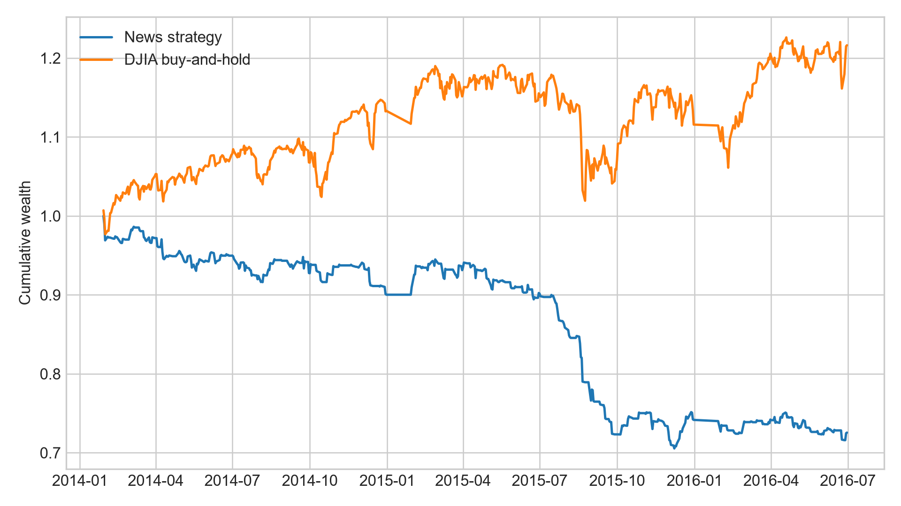
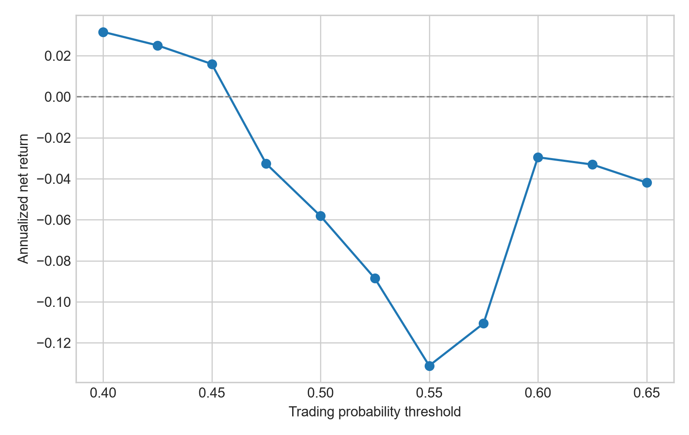
旧图的价值不是证明策略有效，而是说明平均情绪策略对阈值、窗口和市场年份高度敏感。
分类概率质量也支持从“预测方向”转向“排序因子”
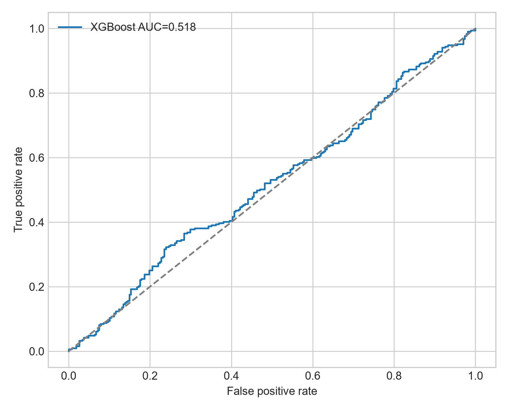
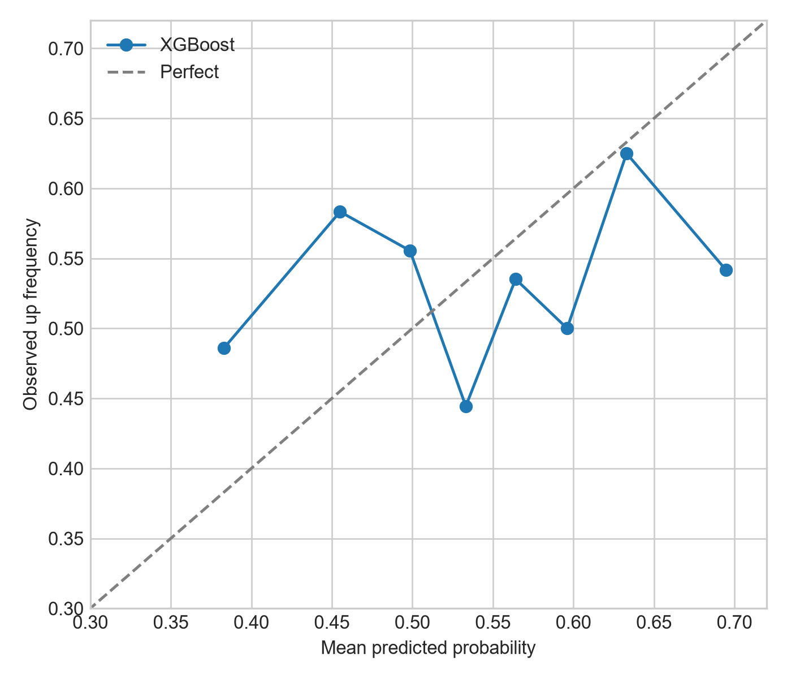
ROC 与校准图只能评价分类模型；它们无法直接说明能否形成可交易 alpha。
为什么 Ridge 不提升而 XGBoost 提升
Ridge 的限制
XGBoost 的优势
当前结论的边界必须说清楚
数据边界
样本只有 4 只高关注科技股，不能直接外推到全市场。
时间边界
2019--2020 存在市场状态变化，仍需更长年份验证。
交易边界
spread 未纳入真实做空约束、滑点、融资和新闻到达延迟。
后续优化应该优先升级数据和事件标注，而不是盲目换模型
更细时间戳
从日级或半结构时间，升级为更接近真实新闻到达的分钟级/秒级时间。
LLM 事件标注
把规则 taxonomy 升级为目标公司、事件类型、事件方向和强度的结构化抽取。
更宽股票池
迁移到 FNSPID 等更大规模数据，检验跨行业、跨市值、跨年份稳定性。
本文的完整收尾：情绪要成为 alpha，必须先被金融结构化
金融新闻情绪的价值不在于“平均正负面”，而在于事件、公司、时间窗口、异常收益四个条件同时成立时产生的相对排序信息。
研究主张
事件感知情绪比日级平均情绪更适合 alpha 识别。
实验发现
XGBoost 中 rank IC 与 spread Sharpe 均有正增量。
现实含义
下一步应做更细时间戳和更大股票池，而不是继续堆分类指标。